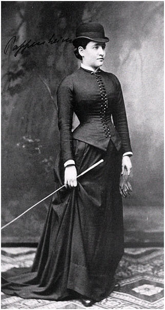

Single-subject researchA type of quantitative research that involves examining in detail the behavior of each of a small number of participants. is a type of quantitative research that involves studying in detail the behavior of each of a small number of participants. Note that the term single-subject does not mean that only one participant is studied; it is more typical for there to be somewhere between two and 10 participants. (This is why single-subject research designs are sometimes called small-n designs, where n is the statistical symbol for the sample size.) Single-subject research can be contrasted with group researchA type of quantitative research that involves studying a large number of participants and examining their behavior in terms of means, standard deviations, and other group-level statistics., which typically involves studying large numbers of participants and examining their behavior primarily in terms of group means, standard deviations, and so on. The majority of this book is devoted to understanding group research, which is the most common approach in psychology. But single-subject research is an important alternative, and it is the primary approach in some areas of psychology.
Before continuing, it is important to distinguish single-subject research from two other approaches, both of which involve studying in detail a small number of participants. One is qualitative research, which focuses on understanding people’s subjective experience by collecting relatively unstructured data (e.g., detailed interviews) and analyzing those data using narrative rather than quantitative techniques. Single-subject research, in contrast, focuses on understanding objective behavior through experimental manipulation and control, collecting highly structured data, and analyzing those data quantitatively.
It is also important to distinguish single-subject research from case studies. A case studyA detailed description of an individual case. is a detailed description of an individual, which can include both qualitative and quantitative analyses. (Case studies that include only qualitative analyses can be considered a type of qualitative research.) The history of psychology is filled with influential cases studies, such as Sigmund Freud’s description of “Anna O.” (see Note 10.5 "The Case of “Anna O.”") and John Watson and Rosalie Rayner’s description of Little Albert (Watson & Rayner, 1920),Watson, J. B., & Rayner, R. (1920). Conditioned emotional reactions. Journal of Experimental Psychology, 3, 1–14. who learned to fear a white rat—along with other furry objects—when the researchers made a loud noise while he was playing with the rat. Case studies can be useful for suggesting new research questions and for illustrating general principles. They can also help researchers understand rare phenomena, such as the effects of damage to a specific part of the human brain. As a general rule, however, case studies cannot substitute for carefully designed group or single-subject research studies. One reason is that case studies usually do not allow researchers to determine whether specific events are causally related, or even related at all. For example, if a patient is described in a case study as having been sexually abused as a child and then as having developed an eating disorder as a teenager, there is no way to determine whether these two events had anything to do with each other. A second reason is that an individual case can always be unusual in some way and therefore be unrepresentative of people more generally. Thus case studies have serious problems with both internal and external validity.
Sigmund Freud used the case of a young woman he called “Anna O.” to illustrate many principles of his theory of psychoanalysis (Freud, 1961).Freud, S. (1961). Five lectures on psycho-analysis. New York, NY: Norton. (Her real name was Bertha Pappenheim, and she was an early feminist who went on to make important contributions to the field of social work.) Anna had come to Freud’s colleague Josef Breuer around 1880 with a variety of odd physical and psychological symptoms. One of them was that for several weeks she was unable to drink any fluids. According to Freud,
She would take up the glass of water that she longed for, but as soon as it touched her lips she would push it away like someone suffering from hydrophobia.…She lived only on fruit, such as melons, etc., so as to lessen her tormenting thirst (p. 9).
But according to Freud, a breakthrough came one day while Anna was under hypnosis.
[S]he grumbled about her English “lady-companion,” whom she did not care for, and went on to describe, with every sign of disgust, how she had once gone into this lady’s room and how her little dog—horrid creature!—had drunk out of a glass there. The patient had said nothing, as she had wanted to be polite. After giving further energetic expression to the anger she had held back, she asked for something to drink, drank a large quantity of water without any difficulty, and awoke from her hypnosis with the glass at her lips; and thereupon the disturbance vanished, never to return.
Freud’s interpretation was that Anna had repressed the memory of this incident along with the emotion that it triggered and that this was what had caused her inability to drink. Furthermore, her recollection of the incident, along with her expression of the emotion she had repressed, caused the symptom to go away.
As an illustration of Freud’s theory, the case study of Anna O. is quite effective. As evidence for the theory, however, it is essentially worthless. The description provides no way of knowing whether Anna had really repressed the memory of the dog drinking from the glass, whether this repression had caused her inability to drink, or whether recalling this “trauma” relieved the symptom. It is also unclear from this case study how typical or atypical Anna’s experience was.
Figure 10.2
“Anna O.” was the subject of a famous case study used by Freud to illustrate the principles of psychoanalysis.
Again, single-subject research involves studying a small number of participants and focusing intensively on the behavior of each one. But why take this approach instead of the group approach? There are several important assumptions underlying single-subject research, and it will help to consider them now.
First and foremost is the assumption that it is important to focus intensively on the behavior of individual participants. One reason for this is that group research can hide individual differences and generate results that do not represent the behavior of any individual. For example, a treatment that has a positive effect for half the people exposed to it but a negative effect for the other half would, on average, appear to have no effect at all. Single-subject research, however, would likely reveal these individual differences. A second reason to focus intensively on individuals is that sometimes it is the behavior of a particular individual that is primarily of interest. A school psychologist, for example, might be interested in changing the behavior of a particular disruptive student. Although previous published research (both single-subject and group research) is likely to provide some guidance on how to do this, conducting a study on this student would be more direct and probably more effective.
A second assumption of single-subject research is that it is important to discover causal relationships through the manipulation of an independent variable, the careful measurement of a dependent variable, and the control of extraneous variables. For this reason, single-subject research is often considered a type of experimental research with good internal validity. Recall, for example, that Hall and his colleagues measured their dependent variable (studying) many times—first under a no-treatment control condition, then under a treatment condition (positive teacher attention), and then again under the control condition. Because there was a clear increase in studying when the treatment was introduced, a decrease when it was removed, and an increase when it was reintroduced, there is little doubt that the treatment was the cause of the improvement.
A third assumption of single-subject research is that it is important to study strong and consistent effects that have biological or social importance. Applied researchers, in particular, are interested in treatments that have substantial effects on important behaviors and that can be implemented reliably in the real-world contexts in which they occur. This is sometimes referred to as social validityThe extent to which a single-subject study focuses on an intervention that has a substantial effect on an important behavior and can be implemented reliably in the real-world contexts (e.g., by teachers in a classroom) in which that behavior occurs. (Wolf, 1976).Wolf, M. (1976). Social validity: The case for subjective measurement or how applied behavior analysis is finding its heart. Journal of Applied Behavior Analysis, 11, 203–214. The study by Hall and his colleagues, for example, had good social validity because it showed strong and consistent effects of positive teacher attention on a behavior that is of obvious importance to teachers, parents, and students. Furthermore, the teachers found the treatment easy to implement, even in their often chaotic elementary school classrooms.
Single-subject research has been around as long as the field of psychology itself. In the late 1800s, one of psychology’s founders, Wilhelm Wundt, studied sensation and consciousness by focusing intensively on each of a small number of research participants. Herman Ebbinghaus’s research on memory and Ivan Pavlov’s research on classical conditioning are other early examples, both of which are still described in almost every introductory psychology textbook.
In the middle of the 20th century, B. F. Skinner clarified many of the assumptions underlying single-subject research and refined many of its techniques (Skinner, 1938).Skinner, B. F. (1938). The behavior of organisms: An experimental analysis. New York, NY: Appleton-Century-Crofts. He and other researchers then used it to describe how rewards, punishments, and other external factors affect behavior over time. This work was carried out primarily using nonhuman subjects—mostly rats and pigeons. This approach, which Skinner called the experimental analysis of behaviorA subfield of psychology founded by B. F. Skinner that uses single-subject research—often with nonhuman animals—to study relationships primarily between environmental conditions and objectively observable behaviors.—remains an important subfield of psychology and continues to rely almost exclusively on single-subject research. For excellent examples of this work, look at any issue of the Journal of the Experimental Analysis of Behavior. By the 1960s, many researchers were interested in using this approach to conduct applied research primarily with humans—a subfield now called applied behavior analysisA subfield of psychology that uses single-subject research and applies the principles of behavior analysis to real-world problems in areas that include education, developmental disabilities, organizational behavior, and health behavior. (Baer, Wolf, & Risley, 1968).Baer, D. M., Wolf, M. M., & Risley, T. R. (1968). Some current dimensions of applied behavior analysis. Journal of Applied Behavior Analysis, 1, 91–97. Applied behavior analysis plays an especially important role in contemporary research on developmental disabilities, education, organizational behavior, and health, among many other areas. Excellent examples of this work (including the study by Hall and his colleagues) can be found in the Journal of Applied Behavior Analysis.
Although most contemporary single-subject research is conducted from the behavioral perspective, it can in principle be used to address questions framed in terms of any theoretical perspective. For example, a studying technique based on cognitive principles of learning and memory could be evaluated by testing it on individual high school students using the single-subject approach. The single-subject approach can also be used by clinicians who take any theoretical perspective—behavioral, cognitive, psychodynamic, or humanistic—to study processes of therapeutic change with individual clients and to document their clients’ improvement (Kazdin, 1982).Kazdin, A. E. (1982). Single-case research designs: Methods for clinical and applied settings. New York, NY: Oxford University Press.
Practice: Find and read a published case study in psychology. (Use case study as a key term in a PsycINFO search.) Then do the following: